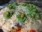
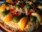
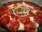
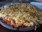
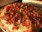

Pizza Pizza
Pizza Pizza Pizza é uma preparação culinária que consiste em um disco de massa fermentada de farinha de trigo, regado com molho de tomates e cobertos com ingredientes variados que normalmente incluem algum tipo de queijo, carnes preparadas ou defumadas e ervas, normalmente oregano ou manjericão, tudo assado em forno.
Alguns tipos de sabores A variedade de coberturas pode ser colocada sobre uma pizza é quase infinita, entretando, algumas preparações são tradicionais e tem fiéis seguidores:
 Margherita
Margherita
 Mussarela
Mussarela

Calabresa Califórnia
Califórnia

Pepperoni
Quatro queijos
Bacon
Margherita Fontes
http://pt.wikipedia.org/wikiPizza
http://www.pizza.it
http://en.wikipedia.org/wiki/History_of_pizza